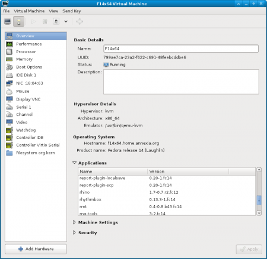
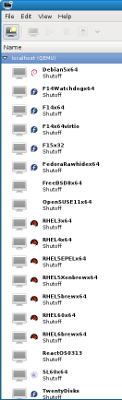

{kind=link}
{kind=link}

Reuse qemu, Linux kernel and userspace tools to read and write disk images.
/* get the Linux VFS type corresponding to a mounted device */ extern char *guestfs_vfs_type (guestfs_h *g, const char *device);
| Example using this API: |
#include <guestfs.h>
char *fstype = guestfs_vfs_type (g, "/dev/vda1");
printf ("%s\n", fstype);
free (fstype);
→ ntfs
|
("vfs_type",
(RString "fstype",
[Device "device"], []),
198, [],
[ (* tests *) ],
"get the Linux VFS type corresponding to a mounted device",
"\
This command gets the filesystem type corresponding to
the filesystem on C<device>.
For most filesystems, the result is the name of the Linux
VFS module which would be used to mount this filesystem
if you mounted it without specifying the filesystem type.
For example a string such as C<ext3> or C<ntfs>.");
|
char *
do_vfs_type (const char *device)
{
return get_blkid_tag (device, "TYPE");
}
static char *
get_blkid_tag (const char *device, const char *tag)
{
char *out, *err;
int r;
r = commandr (&out, &err,
"blkid",
"-c", "/dev/null",
"-o", "value", "-s", tag, device, NULL);
if (r != 0 && r != 2) {
if (r >= 0)
reply_with_error ("%s: %s (blkid returned %d)",
device, err, r);
else
reply_with_error ("%s: %s", device, err);
free (out);
free (err);
return NULL;
}
/* ... */
return out; /* caller frees */
}
|
Just these two fragments generate:
guestfish -N bootrootlv:/dev/VG/LV:ext4:ext4:10G:256M <<EOF mount-options "" /dev/VG/LV / mkdir /boot mount-options "" /dev/sda1 /boot txz-in filesystem.tar.xz / write /etc/HOSTNAME "test01.example.com\n" upload /etc/resolv.conf /etc/resolv.conf EOF guestmount -a test1.img -i mnt/ ls mnt bin dev home lib mnt proc sbin tmp var boot etc initrd.img lost+found old-root root sys usr vmlinuz cat mnt/etc/HOSTNAME test01.example.com fusermount -u mnt | |
virt-df -a /dev/vg/F15x32 -h Filesystem Size Used Available Use% F15x32:/dev/sda1 484M 31M 428M 7% F15x32:/dev/vg_f15x32/lv_root 5.5G 3.4G 1.8G 63% |
virt-cat -c qemu:///system -d WinXP 'c:\boot.ini' [boot loader] timeout=30 default=multi(0)disk(0)rdisk(0)partition(1)\WINDOWS [operating systems] multi(0)disk(0)rdisk(0)partition(1)\WINDOWS= "Microsoft Windows XP Professional" /noexecute=optin /fastdetect |
virt-edit -c qemu:///system -d F15x32 /etc/passwd (launches text editor to edit guest /etc/passwd) virt-edit -c qemu:///system -d F15x32 /etc/passwd \ -e 's/^root:.*?:/root::/' |
virt-win-reg -c qemu:///system --unsafe-printable-strings \ Win7x32 'HKLM\SYSTEM\ControlSet001\Services\Tcpip\Parameters' \ | grep DhcpIPAddress "DhcpIPAddress"=str(1):"192.168.122.178" |
$ virt-filesystems -c qemu:///system -d Win7x32 --all --long -h --uuid Name Type VFS Label MBR Size Parent UUID /dev/sda1 filesystem ntfs System Reserved - 100M - F81C92571C92112C /dev/sda2 filesystem ntfs - - 20G - F2E8996AE8992E3B /dev/sda1 partition - - 07 100M /dev/sda - /dev/sda2 partition - - 07 20G /dev/sda - /dev/sda device - - - 20G - -
$ virt-inspector -c qemu:///system -d Win7x32
<?xml version="1.0"?>
<operatingsystems>
<operatingsystem>
<root>/dev/sda2</root>
<name>windows</name>
<arch>i386</arch>
<distro>windows</distro>
<product_name>Windows 7 Enterprise</product_name>
<product_variant>Client</product_variant>
<major_version>6</major_version>
<minor_version>1</minor_version>
<windows_systemroot>/Windows</windows_systemroot>
<windows_current_control_set>ControlSet001</windows_current_control_set>
<hostname>win7x32</hostname>
... etc ...
char **roots;
size_t i;
char *type, *distro, *product_name;
int major, minor;
roots = guestfs_inspect_os (g);
if (roots == NULL)
exit (EXIT_FAILURE);
if (roots[0] == NULL) {
fprintf (stderr, "no operating systems found\n");
exit (EXIT_FAILURE);
}
for (i = 0; roots[i] != NULL; ++i) {
type = guestfs_inspect_get_type (g, roots[i]);
distro = guestfs_inspect_get_distro (g, roots[i]);
product_name = guestfs_inspect_get_product_name (g, roots[i]);
major = guestfs_inspect_get_major_version (g, roots[i]);
minor = guestfs_inspect_get_minor_version (g, roots[i]);
printf ("Root: %s\n"
" Type: %s\n"
" Distro: %s\n"
" Version: %d.%d\n"
" Product name: %s\n\n");
roots[i],
type ? : "unknown", distro ? : "unknown", major, minor,
product_name ? : "");
free (type);
free (distro);
free (product_name);
free (roots[i]);
}
free (roots);
| Click to enlarge the images | |
|  |  |


libguestfs.org is the main website.
guestfs(3) is the manual page documenting the C API and the internals.
There are manual pages documenting guestfish, guestmount and each virt tool. See the main website or your local man command.
For information about virt-v2v and virt-p2v, see http://libguestfs.org/virt-v2v/
This page © 2011 Red Hat Inc. and distributed under the terms of the GNU General Public License as published by the Free Software Foundation; either version 2 of the License, or (at your option) any later version.